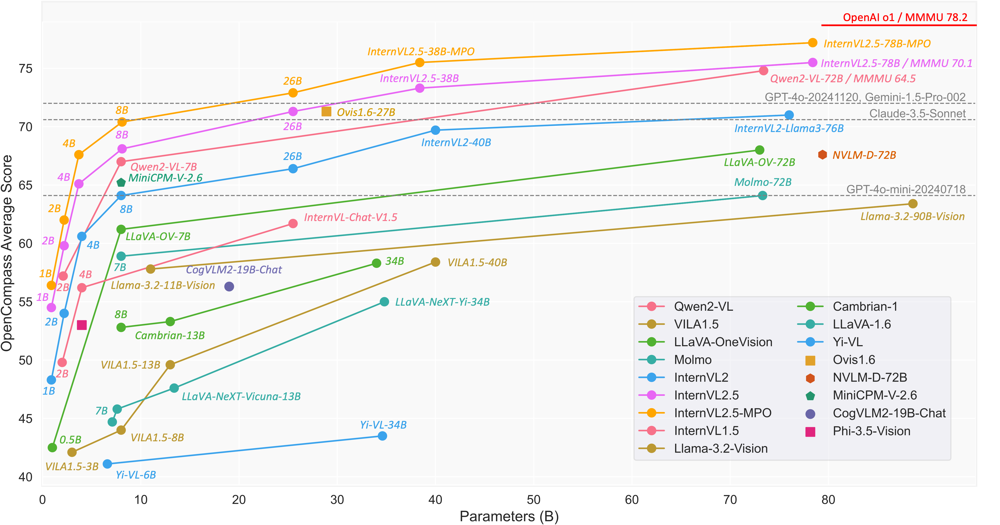

InternVL2.5-MPO: Enhancing the Reasoning Ability of Multimodal Large Language Models via Mixed Preference Optimization
[üÜï Go Back]
[üìú InternVL2.5-MPO Paper]
[üìú InternVL2.5 Report]
[üìú InternVL 1.0 Paper]
[üìú InternVL1.5 Paper]
[üìÇ GitHub]
[üìñ Documents]
[üó®Ô∏è Chat Demo]
[ü§ó HF Demo]
[ ModelScope]
[üöÄ
Quick Start]
ModelScope]
[üöÄ
Quick Start]
| Model | Date | HF Link | MS Link | Document | OC Performance |
|---|---|---|---|---|---|
| InternVL2_5-1B-MPO | 2024.12.20 | ü§ó link | ü§ñ link | üìñ doc | 56.4 (+1.5) |
| InternVL2_5-2B-MPO | 2024.12.20 | ü§ó link | ü§ñ link | üìñ doc | 62.0 (+2.1) |
| InternVL2_5-4B-MPO | 2024.12.20 | ü§ó link | ü§ñ link | üìñ doc | 67.6 (+2.5) |
| InternVL2_5-8B-MPO | 2024.12.20 | ü§ó link | ü§ñ link | üìñ doc | 70.4 (+2.3) |
| InternVL2_5-26B-MPO | 2024.12.20 | ü§ó link | ü§ñ link | üìñ doc | 72.9 (+1.3) |
| InternVL2_5-38B-MPO | 2024.12.20 | ü§ó link | ü§ñ link | üìñ doc | 75.5 (+2.0) |
| InternVL2_5-78B-MPO | 2024.12.20 | ü§ó link | ü§ñ link | üìñ doc | 77.2 (+2.0) |
| InternVL2_5-Pro | - | - | - | - | 79.1 |
* OC performance refers to the results on the OpenCompass Leaderboard.
* The values in parentheses indicate the performance gap between the model after and before MPO.
We introduce InternVL2.5-MPO, an advanced multimodal large language model (MLLM) series that demonstrates superior overall performance. This series builds upon InternVL2.5 and Preference Optimization. Existing open-source multimodal large language models (MLLMs) generally follow a training process involving pre-training and supervised fine-tuning. However, these models suffer from distribution shifts, which limit their multimodal reasoning, particularly in the Chain-of-Thought (CoT) performance. To address this, we introduce a preference optimization (PO) process to enhance the multimodal reasoning capabilities of MLLMs. Specifically, (1) on the data side, we design an automated preference data construction pipeline to create MMPR, a high-quality, large-scale multimodal reasoning preference dataset. and (2) on the model side, we explore integrating PO with MLLMs, developing a simple yet effective method, termed Mixed Preference Optimization (MPO), which boosts multimodal CoT performance. Our approach demonstrates improved performance across multiple benchmarks, particularly in multimodal reasoning tasks. Notably, our models outperform their counterparts without MPO by an average of 2 points across all scales on the OpenCompass leaderboard. We hope this study could inspire further advancements in MLLMs.
InternVL2.5-MPO family is built upon the following designs:
- Multi-Modal Preference Dataset (MMPR): We propose an efficient preference data construction pipeline. Based on this pipeline, we create MMPR, a high-quality, large-scale multimodal reasoning preference dataset containing approximately 3 million samples.
- Mixed Preference Optimization (MPO): We introduce MPO, an effective PO algorithm designed to improve the reasoning abilities of MLLMs. The key insight behind this algorithm is that an effective PO process should enable the model to learn the relative preference between pairs of responses, the absolute quality of individual responses, and the process for generating preferred responses.

MMPR
To construct a large-scale preference optimization dataset, we propose an efficient data construction pipeline. Specifically, we categorize the multimodal data into samples with clear ground truths and samples without clear ground truths.
- For samples with clear ground truths, the model is prompted to first provide the reasoning process and then give the final answer in the format like "Final Answer: xxx". Responses matching the ground truth answer constitute the positive set , while those that do not match make up the negative set . Additionally, responses that fail to provide a clear final answer are also merged into . Given these responses labeled as positive or negative, we build the preference pairs by selecting a chosen response from and a negative response from .
- For samples without clear ground truths, we propose a simple yet effective method: Dropout Next-Token Prediction (Dropout NTP). Specifically, we use the responses generated by InternVL2-8B as chosen answers. Given the chosen answer, we truncate it by half and then prompt InternVL2-8B to complete the remaining portion of the truncated answer without access to the image input. This generated completion serves as the rejected answer for the paired sample. It is worth noting that while the responses generated by InternVL2-8B may not be perfect, the completions generated without the image input will introduce more hallucinations than those generated with the image input. Therefore, the partial order relationship between the chosen and rejected responses holds true.


Mixed Preference Optimization
The key insight behind MPO is that an effective PO process should enable the model to learn the relative preference between pairs of responses, the absolute quality of individual responses, and the process for generating preferred responses. We define the training objective as a combination of preference loss , quality loss , and generation loss , referred to as Mixed Preference Optimization:
where represents the weight assigned to each loss component. In this work, we empirically compare different variants of preference loss. Based on the experimental results, we use DPO as our preference loss and BCO as our quality loss.
Specifically, the DPO serves as the preference loss to enable the model to learn the relative preference between chosen and rejected responses. This algorithm optimizes the following loss function:where is the KL penalty coefficient, and , , and are user query, chosen response, and rejected response, respectively. The policy model is initialized from model .
Additionally, the BCO loss is employed as the quality loss, which helps the model to understand the absolute quality of individual responses. The loss function is defined as:
where and represent the loss for chosen and rejected responses, respectively. Each response type's loss is calculated independently, requiring the model to differentiate the absolute quality of individual responses. The loss terms are given by:
where represents the reward shift, calculated as the moving average of previous rewards to stabilize training.
Finally, the SFT loss is used as the generation loss to help the model learn the generation process of preferred responses. The loss function is defined as:
Performance
To comprehensively compare InternVL's performance before and after MPO, we employ the benchmarks from OpenCompass Learderboard, including both well-established classic datasets and newly introduced ones. These benchmarks span a wide range of categories, aiming to provide a thorough and balanced assessment of InternVL’s capabilities across various multimodal tasks. We provide the evaluation results in the tables behind.
| Model | Avg. | MMBench v1.1 | MMStar | MMMU | MathVista | HallusionBench | AI2D | OCRBench | MMVet |
|---|---|---|---|---|---|---|---|---|---|
| InternVL2-5-1B | 54.9 | 66.5 | 51.3 | 41.2 | 47.1 | 39.4 | 69.0 | 774 | 47.2 |
| InternVL2-5-1B-MPO | 56.4 | 67.2 | 49.7 | 40.8 | 53.0 | 40.0 | 69.4 | 836 | 47.2 |
| InternVL2-5-2B | 59.9 | 70.9 | 54.3 | 43.2 | 51.1 | 42.3 | 74.9 | 802 | 62.6 |
| InternVL2-5-2B-MPO | 62.0 | 71.6 | 55.0 | 45.0 | 56.4 | 43.0 | 75.3 | 842 | 65.4 |
| InternVL2-5-4B | 65.1 | 78.2 | 58.7 | 51.8 | 60.8 | 46.6 | 81.4 | 820 | 61.5 |
| InternVL2-5-4B-MPO | 67.6 | 78.6 | 60.2 | 51.6 | 65.3 | 47.8 | 82.0 | 880 | 67.1 |
| InternVL2-5-8B | 68.9 | 82.5 | 63.2 | 56.2 | 64.5 | 49.0 | 84.6 | 821 | 62.8 |
| InternVL2-5-8B-MPO | 70.4 | 82.4 | 65.7 | 54.9 | 68.9 | 51.4 | 84.5 | 883 | 66.9 |
| InternVL2-5-26B | 71.6 | 84.6 | 66.5 | 60.7 | 68.0 | 55.8 | 86.2 | 854 | 65.4 |
| InternVL2-5-26B-MPO | 72.9 | 84.2 | 67.9 | 57.3 | 72.2 | 55.4 | 86.7 | 907 | 68.8 |
| InternVL2-5-38B | 73.5 | 85.4 | 68.5 | 64.6 | 72.4 | 57.9 | 87.6 | 841 | 67.2 |
| InternVL2-5-38B-MPO | 75.5 | 85.6 | 69.8 | 64.1 | 73.8 | 61.5 | 88.1 | 885 | 72.5 |
| InternVL2-5-78B | 75.2 | 87.5 | 69.5 | 70.0 | 70.6 | 57.4 | 89.1 | 853 | 71.8 |
| InternVL2-5-78B-MPO | 77.2 | 87.8 | 71.9 | 68.7 | 76.5 | 58.9 | 89.3 | 907 | 73.6 |
Citation
@article{wang2024mpo,
title={Enhancing the Reasoning Ability of Multimodal Large Language Models via Mixed Preference Optimization},
author={Wang, Weiyun and Chen, Zhe and Wang, Wenhai and Cao, Yue and Liu, Yangzhou and Gao, Zhangwei and Zhu, Jinguo and Zhu, Xizhou and Lu, Lewei and Qiao, Yu and Dai, Jifeng},
journal={arXiv preprint arXiv:2411.10442},
year={2024}
}
@article{chen2024expanding,
title={Expanding Performance Boundaries of Open-Source Multimodal Models with Model, Data, and Test-Time Scaling},
author={Chen, Zhe and Wang, Weiyun and Cao, Yue and Liu, Yangzhou and Gao, Zhangwei and Cui, Erfei and Zhu, Jinguo and Ye, Shenglong and Tian, Hao and Liu, Zhaoyang and others},
journal={arXiv preprint arXiv:2412.05271},
year={2024}
}
@article{chen2024far,
title={How Far Are We to GPT-4V? Closing the Gap to Commercial Multimodal Models with Open-Source Suites},
author={Chen, Zhe and Wang, Weiyun and Tian, Hao and Ye, Shenglong and Gao, Zhangwei and Cui, Erfei and Tong, Wenwen and Hu, Kongzhi and Luo, Jiapeng and Ma, Zheng and others},
journal={arXiv preprint arXiv:2404.16821},
year={2024}
}
@inproceedings{chen2024internvl,
title={Internvl: Scaling up vision foundation models and aligning for generic visual-linguistic tasks},
author={Chen, Zhe and Wu, Jiannan and Wang, Wenhai and Su, Weijie and Chen, Guo and Xing, Sen and Zhong, Muyan and Zhang, Qinglong and Zhu, Xizhou and Lu, Lewei and others},
booktitle={Proceedings of the IEEE/CVF Conference on Computer Vision and Pattern Recognition},
pages={24185--24198},
year={2024}
}